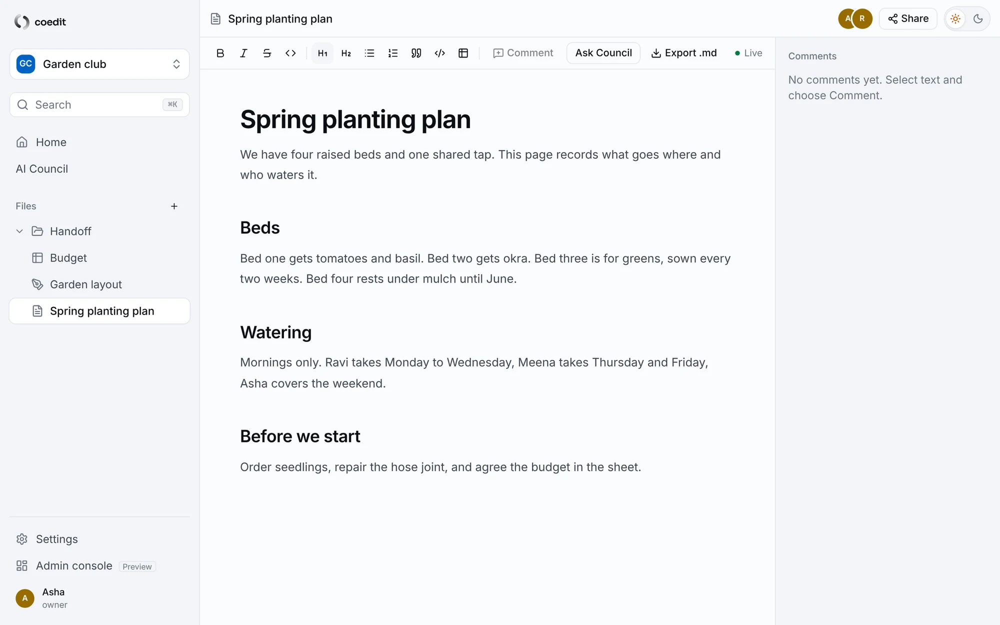
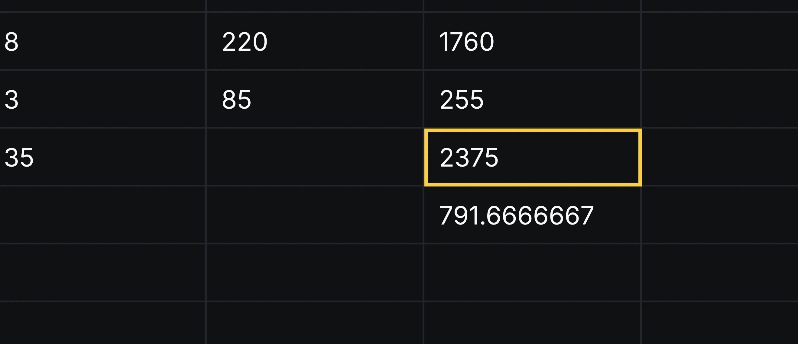
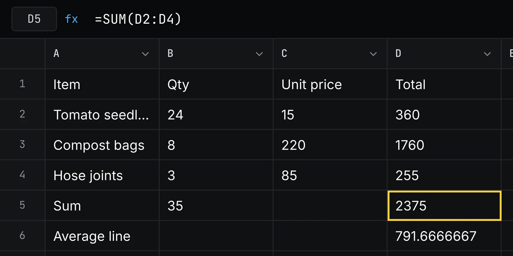
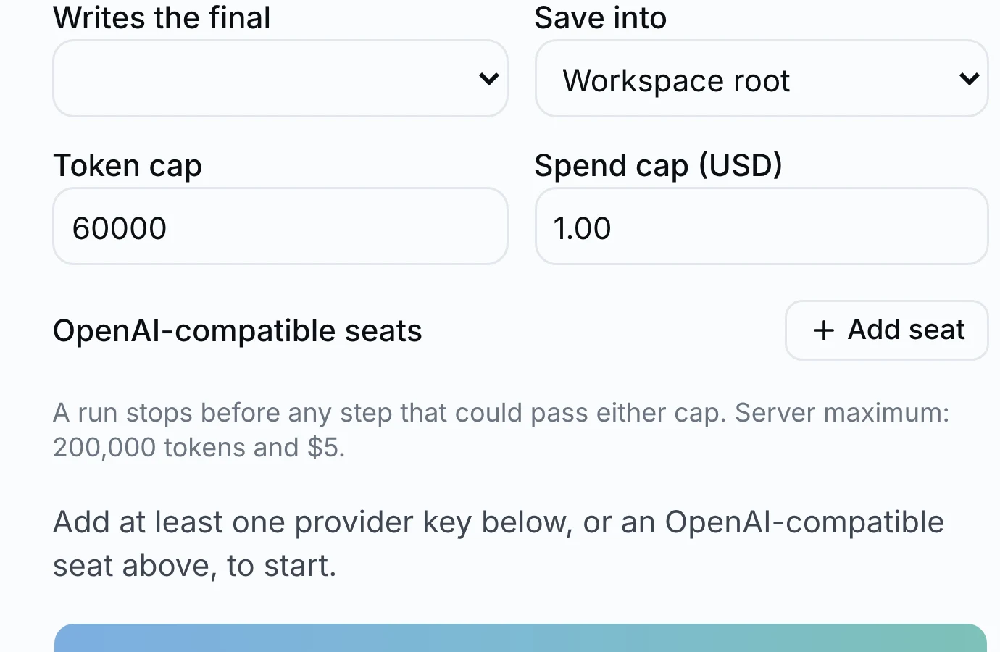
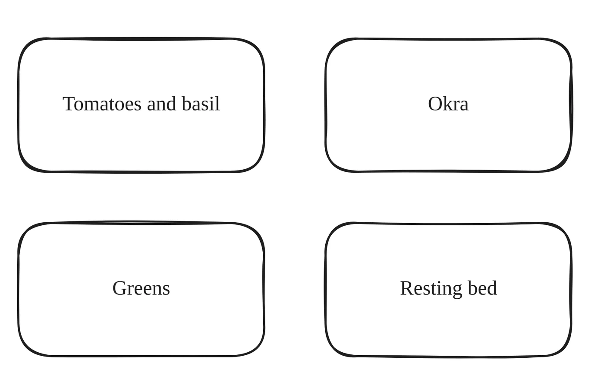

Your files sit together
A planting plan, its budget and a drawing of the beds live in one sidebar. Import Markdown or CSV, and export documents and sheets again when you need to.
Yjs CRDTlive document sync
26 by 100cells in each sheet
PostgreSQL 16your own database
Docker Composeruns on your machine

A planting plan, its budget and a drawing of the beds live in one sidebar. Import Markdown or CSV, and export documents and sheets again when you need to.
Edits merge as they arrive. In spreadsheets, a changed cell recalculates its totals in the other window too.
Each workspace has owners, members and viewers. The server enforces the role, so a viewer cannot write even with a modified browser.


cells in a sheet, 26 columns by 100 rows.

is the most one AI council run can be set to spend. You bring your own API key, and several models draft and critique a project brief.

for each drawing. One person edits a canvas at a time, and you can export it as PNG or SVG.
| Files | Documents, spreadsheets, canvases and uploads |
|---|---|
| Sync | Yjs CRDT with a Hocuspocus server |
| Edit delay | 7 ms median, 38 ms slowest1 |
| Sheet size | 26 columns by 100 rows2 |
| Role re-check | Every 30 seconds by default3 |
| Upload limit | 50 MiB per file2 |
| Canvas | Single user, 5 MiB per drawing2 |
| Council cap | 200,000 tokens and $5 per run, at most2 |
| Council tested | Run against Gemini and Groq. Other provider adapters have not been run live.4 |
| Tests | 357 backend, 18 sync and 102 frontend, all passing5 |
| Stack | Next.js, TipTap, FastAPI, PostgreSQL 16 |
| Hosting | Self-hosted with Docker Compose. There is no hosted service. |
| Licence | GNU GPL version 3 |
“Built solo as a full-stack project to learn how realtime systems, access control and safe LLM calls fit together.”
Prabhu Siddarth A V, who built Coedit, in its README